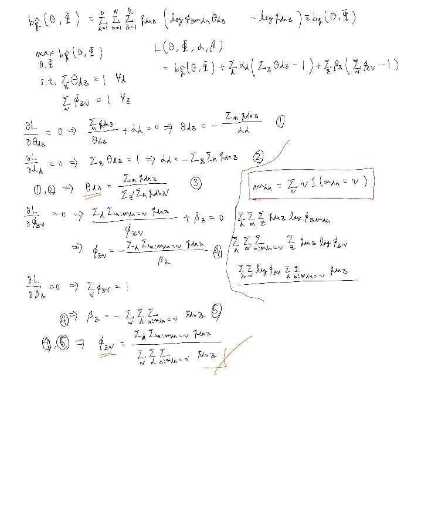
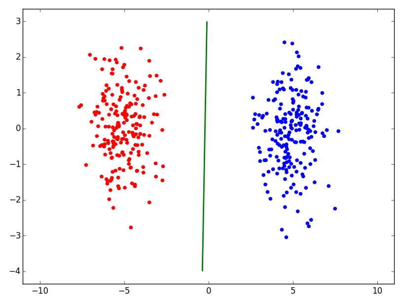
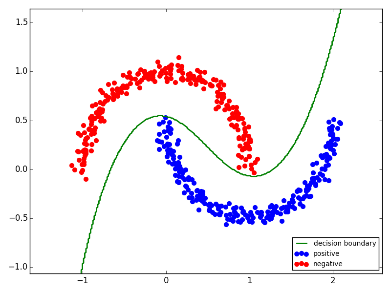

nktmemo_ja
About
Posts
Jul 10, 2016
半教師付きページランクを用いたウェブページからの教師なしメインコンテンツ抽出
Jul 7, 2016
半教師付きページランクを用いたウェブページ中の単語への重み付け
Jul 7, 2016
ラプラス正則化を用いた半教師付きページランク
Jul 1, 2016
Topic Modelの最尤推定の解の導出

May 24, 2016
Adjusted Rand Index (ARI) について勉強してみた
Jan 11, 2016
ソフトマージンSVMのヒンジ損失最小化学習としての解釈とその実装

Jan 11, 2016
勾配法で目的関数値は単調に減少していくのか？
Jan 8, 2016
ハードマージンSupport Vector Machine (SVM)の定式化
Oct 29, 2015
正例とラベル無しデータからの学習 (PU classification)
Oct 27, 2015
Word2Vecを使った単語間関係分類
Oct 6, 2015
Word2Vec+教師あり次元削減で文書分類+単語分類
Sep 29, 2015
文書分類器で単語分類をしてみる
Aug 25, 2015
RBF (Gaussian) Kernel Modelを使うためのWrapper Classを作りました

Jul 25, 2015
ラプラス正則化 (Laplacian Regularization) を使った半教師付き分類
Jul 21, 2015
BOW+TFIDFでニュース記事分類
Jul 19, 2015
word2vecでニュース記事分類
Jul 18, 2015
Pythonでscikit-multilearnを使ったマルチラベル分類 (multi-label classification)
Jul 8, 2015
局所性保存射影 (Locality Preserving Projection, LPP)とラプラス固有写像 (Laplacian Eigenmap)
Jul 7, 2015
グラム行列の固有値分解で特徴ベクトルを得るのはkernel PCAをするのと同じこと
Jun 30, 2015
グラム（カーネル）行列の固有値分解で対応する特徴ベクトルを得る
Jun 27, 2015
word2vecで学習したベクトル表現を使って分類器を作ってみる
May 25, 2015
共起行列の作成 scipy.sparse.coo_matrix
May 19, 2015
ベイズ推定 (Bayesian Inference)
Oct 13, 2014
列空間（像）と零空間（核）と正射影行列
May 11, 2014
KDEを使った相互情報量の推定
May 11, 2014
確率変数のエントロピーの推定 (2)
May 11, 2014
Gaussianに従う確率変数のエントロピーの推定
Mar 10, 2014
必要な標本サイズを求める（母分散が既知の場合）
Mar 9, 2014
上側，下側確率とquantile（確率点）の関係
Mar 4, 2014
平均値の差の検定の威力たるや...
Feb 7, 2014
単語を使った特徴量をBasic Summarization Modelに組み込む（NLP, 自動文書要約）
Jan 22, 2014
Basic Summarization Modelで文書要約 Python
Dec 9, 2013
凸関数の便利な性質
subscribe
via RSS
PostsTop